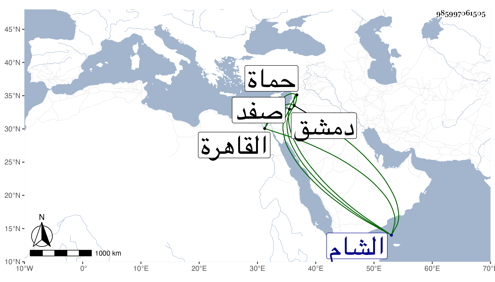

0902Sakhawi.DawLamic.ITO20230111-ara1.EIS1600.985997061505
Biography ID: 985997061505
355
محمد الشمس بن خطيب قارا . كان متمولا ولي قضاء صفد وحماة وغيرهما يتنقل في ذلك ، وفي آخر أمره تنجز مرسوما من السلطان بوظائف الكفيري ونيابة الحكم بدمشق وقدمها فوجد الوظائف انقسمت بين اهل الشام فجمع أطرافه وعزم على السعي في قضاء دمشق وركب البحر ليحضر بما جمعه القاهرة فغرق وذهب ماله وذلك في رجب سنة إحدى وثلاثين . قاله شيخنا أيضا .
